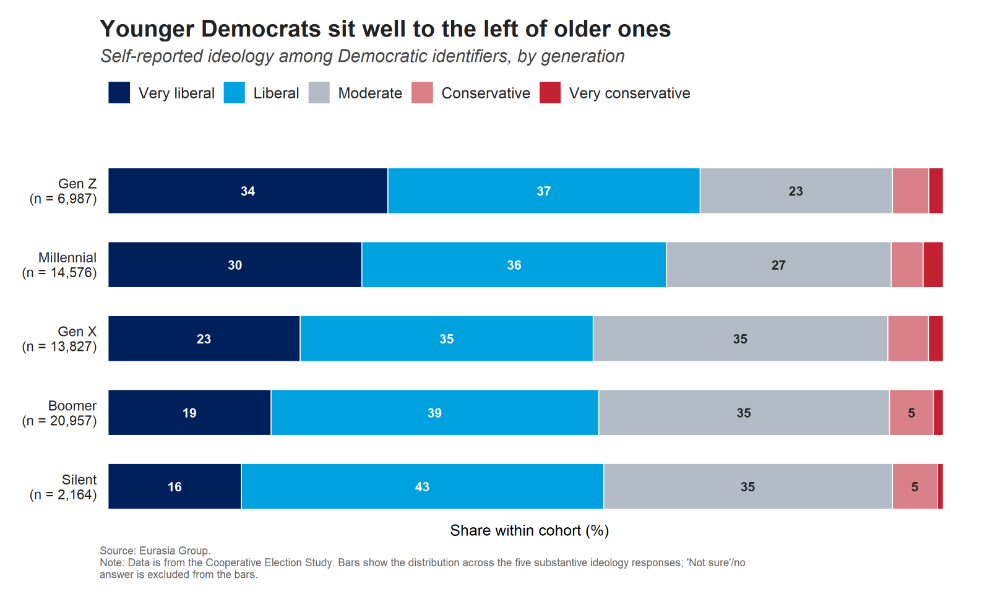
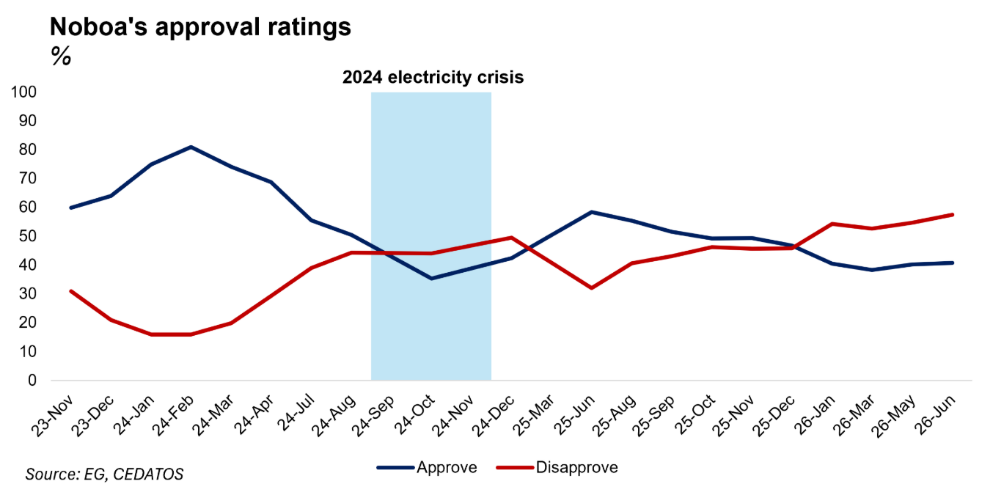
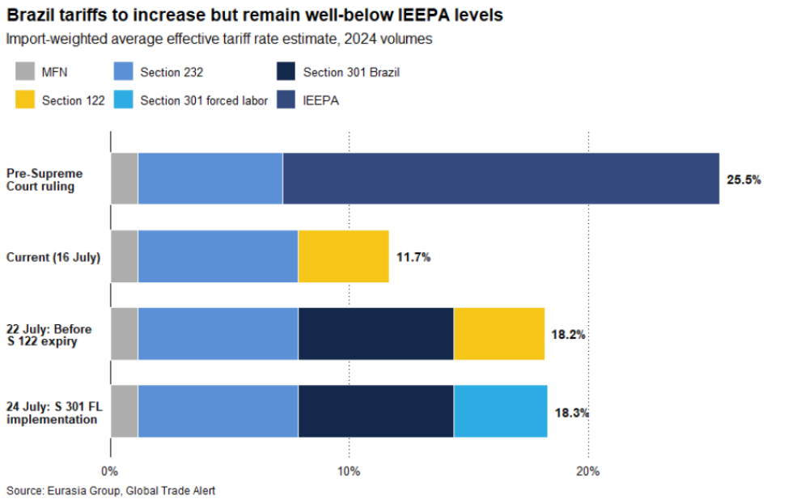

|
20 Jul 2026 08:37 EDT |
||
|
|||
|
|||
summary
|
|||
the top lineIan Bremmer on IranThe Americans and the Iranians announced a deal in Switzerland last month… acceptance of a 60-day ceasefire and free passage through the Strait of Hormuz… fundamental disagreements continued over control over the strait… when the Americans pressed their understanding. The Iranians pressed their own very different understanding, by attacking those ships and disrupting the strait once more. President Donald Trump breached the memorandum—announcing a US blockade on Iranian ports with continued targeted strikes against Iranian military and some infrastructure targets. Iran hit back… striking US military bases and equivalent infrastructure across the Gulf, killing three US servicemen in the process. The Iranians are unlikely to back down… looking for long-term leverage over the strait… the costs of American escalation absent a return to full-blown war are manageable for the Iranian leaders. They still presume (I believe correctly) that Trump is reluctant to take that step.
Hong Kong, US, China—Core US restrictions will largely remain despite Hong Kong status reversal
US—Democrats' Tea Party moment will drag the party left

Venezuela—US signals stronger support for democratic transition
Upcoming conference calls |
||

eg in depthEcuador—Electricity shortages will be Noboa's biggest political vulnerability. The failure of President Daniel Noboa’s administration to address the country’s electricity deficit will be a significant electoral weakness amid a meaningful risk of blackouts later this year. Renewed blackouts would weigh on Noboa’s approval ratings and accentuate his populist policy inclinations ahead of November’s regional and local elections, though a recent oil windfall will help to cushion any fallout. The ruling party lacks strong contenders in most high-profile races but will likely expand its local footprint and seek informal alliances with competitive candidates to undermine the electoral chances of former president Rafael Correa’s movement. Read more here. Reach out to discuss: latinamerica@eurasiagroup.net. 
Brazil—Near term retaliation against US tariffs unlikely. Following the United States Trade Representative’s Section 301 investigation into Brazilian trade practices, the US imposed a 25% tariff on Brazilian goods. Brazilian officials have responded with public threats to invoke the country's reciprocity law, but implementation faces a long path. The reciprocity law process includes mandatory deliberation across multiple government bodies, public hearings with the private sector, and possible extension periods, which means that enacting any retaliatory measure could take up to nine months. That timeline pushes meaningful action well past the electoral cycle, during which bilateral friction will likely peak. The range of potential retaliatory tools, from tariffs to breaking intellectual property patents held by US firms, faces opposition from most of the Brazilian private sector, which has little appetite for measures that could trigger further economic disruption or jeopardize commercial ties with the US. Read more here. Reach out to discuss: brazil@eurasiagroup.net. 
Colombia—Colombia's incoming, right-leaning congress will likely support De la Espriella. The new congress elected in the March legislative elections will take office on 20 July, before the inauguration of right-wing president-elect Abelardo De la Espriella on 7 August. The legislature will remain fragmented, lean right, and likely support De la Espriella. Right-wing and centrist lawmakers will probably support De la Espriella's agenda, including measures to boost investment, strengthen security, and advance fiscal adjustment. However, that support will likely vary by issue and depend on concessions and negotiations, as is typical in Colombia. Tensions will probably grow as De la Espriella will likely favor close allies over party-backed figures for key posts, while he needs congressional support for potentially unpopular measures. Tensions have already emerged between the incoming administration and the Democratic Center Party during negotiations over congressional leadership. Read more here. Reach out to discuss: latinamerica@eurasiagroup.net.
Upcoming events:
The EG Daily Brief is compiled by Jens Larsen, Lucy Eve, Babak Minovi, Pietro Guglielmi, Rahul Bhatia, Marilia Sirio, Joseph Craven, Martina Silva, and Trista Kelley, with help from Marina Tavares, and Astral Betteridge. |
||
 |
closing quipNot a single drop of oil, gas, or chemical fertilizer will pass through the Strait of Hormuz without coordination and permission.”—the Iranian Revolutionary Guards Corp Navy said in a statement on 19 July. |
||
 |
|||